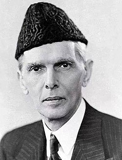

This article is about the country. For other uses, see Pakistan (disambiguation).
Pakistan,[f] officially the Islamic Republic of Pakistan,[g] is a country in South Asia. It is the fifth-most populous country, with a population of over 241.5 million,[d] having the second-largest Muslim population in the world as of 2023. Islamabad is the nation's capital, while Karachi is its largest city and financial centre. Pakistan is the 33rd-largest country by area. Bounded by the Arabian Sea on the south, the Gulf of Oman on the southwest, and the Sir Creek on the southeast, it shares land borders with India to the east; Afghanistan to the west; Iran to the southwest; and China to the northeast. It shares a maritime border with Oman in the Gulf of Oman, and is separated from Tajikistan in the northwest by Afghanistan's narrow Wakhan Corridor.

Muhammad Ali Jinnah[a] (born Mahomedali Jinnahbhai;[b] 25 December 1876 – 11 September 1948) was barrister, statesman, and the founder of Pakistan. He served as the leader of the All-India MusliLeague from 1913 until the independence of Pakistan on 14 August 1947, and then as Pakistan'first governor-general until his death a year later in 1948. Born at Wazir Mansion in Karachi, Jinnah was trained as a barrister at Lincoln's Inn in London, England. Upon his return to India, he enrolled at the Bombay High Court, and took an interest in national politics, which eventually replaced his legal practice. Jinnah rose to prominence in the Indian National Congress in the first two decades of the 20th century. In these early years of his political career, Jinnah advocated for Hindu–Muslim unity, helping to shape the 1916 Lucknow Pact between the Congress and the All-India Muslim League, in which Jinnah had also become prominent. Jinnah became a key leader in the All-India Home Rule League, and proposed a fourteen-point constitutional reform plan to safeguard the political rights of Muslims in the Indian subcontinent. In 1920, however, Jinnah resigned from the Congress when it agreed to follow a campaign of satyagraha, which he regarded as political anarchy.